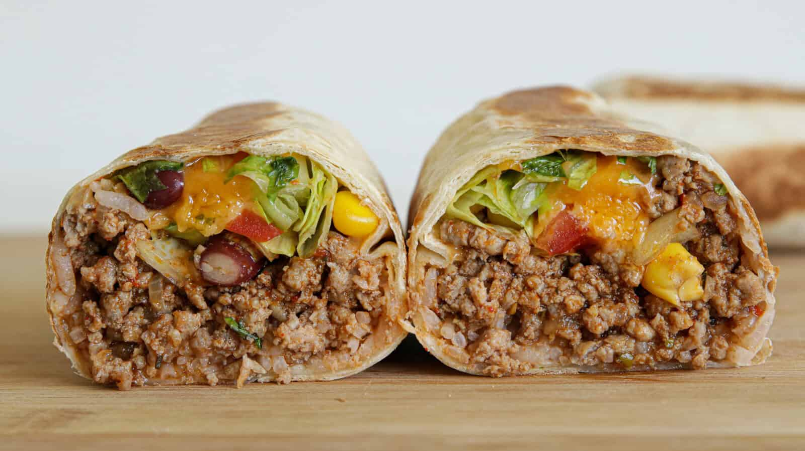

Back to Recipes
Burrito

Description
A burrito is a delicious Mexican dish consisting of a flour tortilla wrapped around a filling,
typically including rice, beans, cheese, and various meats or vegetables.
Ingredients
- 1 large flour tortilla
- 1 cup cooked rice
- 1/2 cup black beans
- 1/2 cup shredded cheese
- 1/4 cup salsa
- 1/4 cup sour cream
- 1/4 cup guacamole
- 1/4 cup chopped cilantro
Steps
- Warm the tortilla in a skillet over medium heat.
- Layer the rice, black beans, cheese, salsa, sour cream, guacamole, and cilantro on the tortilla.
- Fold the sides of the tortilla over the filling and roll it up tightly.
- Serve with extra salsa and sour cream on the side.
- Enjoy your delicious burrito!
Optional Recommendations
- Optional: Add diced bell peppers or onions for extra flavor.
- Optional: Use grilled vegetables for a vegetarian option.
- Optional: Add hot sauce for a spicy kick.
- Optional: Use shredded chicken or beef for a heartier filling.
- Optional: Add corn for sweetness and texture.
- Optional: Use a different type of cheese like pepper jack or cheddar.
- Optional: Add lime juice for a zesty flavor.
- Optional: Serve with a side of tortilla chips and salsa.
- Optional: Wrap the burrito in foil for easy eating on the go.
- Optional: Add grilled chicken or steak for extra protein.
- Optional: Add jalapeños for a spicy kick.
- Optional: Use a whole wheat tortilla for a healthier option.
- Optional: Add lettuce and tomatoes for extra freshness.
- Optional: Serve with tortilla chips on the side.